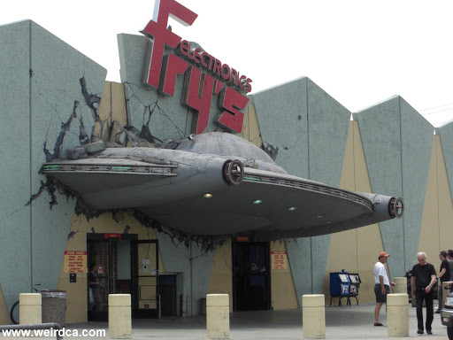
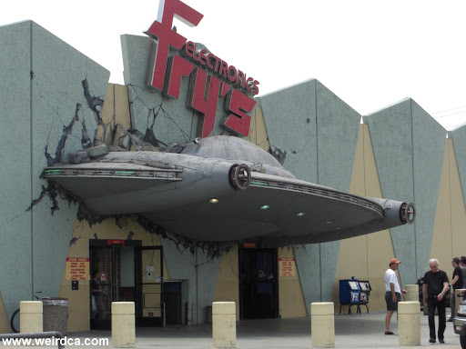

Welcome to Save Frys.com
 

donate at savefrys.eth
join our discord
FAQ:
About who are we:
we are just a couple of people
What is frys:
frys is an iconic electronics store from the 90s that recently closed
What are we saving:
the goal right now is to raise enough money to take the UFO off of the burbank Fry's building and rescue it and put it somewhere safe as an iconic peice of LA history. If we can save other Fry's marketing and branding material we will, the goal is to attend the firesale auctions and pick up whatever we can afford
What will we do with the money if we can't accomplish our goal:
for now I am keeping it very simple and linking an etherium wallet that I simply have available. If for whatever reason we cannot use the money to save Fry's cultural heritage we'll either send it back or pay it forward to a charity. I don't know right now how to be accountable for that except for the fact that everything is on the blockchain so it should be fairly easy to track.